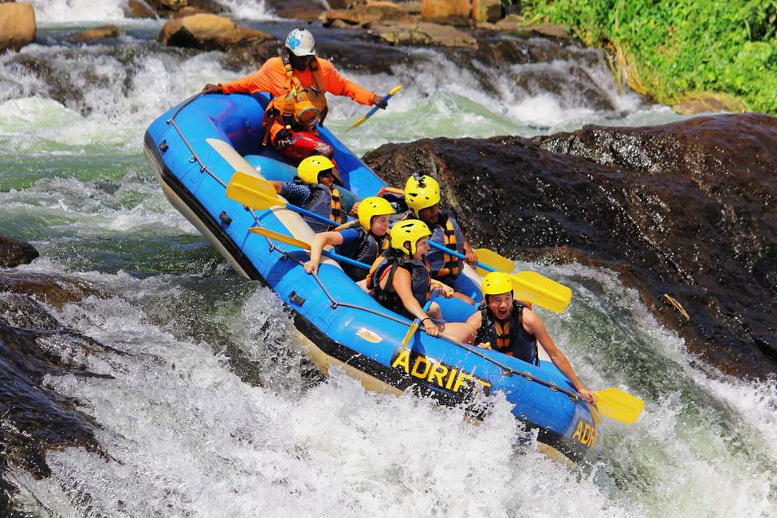
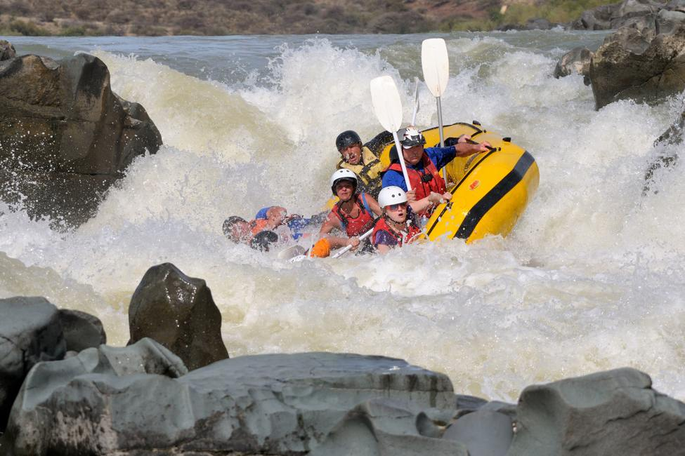
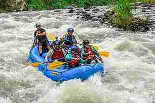

We craft unforgettable whitewater rafting adventures filled with excitement, thrill, and memories that will last a lifetime. Join us and embark on the journey of a lifetime!
About Nigeria Whitewater Rafting Adventure
History
Experience the ultimate whitewater rafting adventure with White Water Rafting, founded by Austine77 in 2025 and proudly based in Akwa Ibom, Nigeria. Whether you’re seeking family-friendly fun or the adrenaline rush of tackling high-octane rapids, we deliver unforgettable experiences tailored for every thrill-seeker. Join us and create memories that last a lifetime! Your next great adventure starts here. 🌊
Adventure Awaits You!





Why Choose Us?
At Nigeria Whitewater Rafting Adventure, we are passionate about offering the best rafting experiences in Nigeria. Our team of experts is dedicated to ensuring your safety and providing a fun, thrilling adventure. With years of experience and a commitment to excellence, we guarantee that your rafting adventure will be unforgettable.